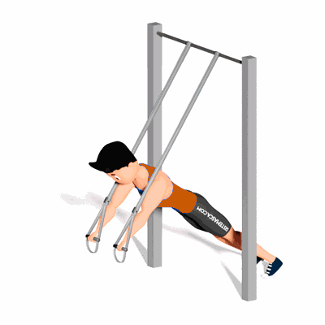

Fallout no TRX

Esse exercício trabalha fortalecimento do tórax, o abdômen e os ombros. O nível de dificuldade de execução do exercício é intermediário.
Ficha Técnica
Tipo: Funcional
Grupo Muscular: Corpo
Aparelho: Nenhum
Músculos: Nenhum
Como realizar
- De pé e de costas para o equipamento, agarre as alças com as mãos em uma posição levemente abaixo da altura dos ombros;
- Após, incline-se para frente e movimente as mãos para trás, estendendo os braços, de maneira que ele fique em linha com o corpo;
- Volte à posição inicial e repita os movimentos.
 RC STORE
RC STORE